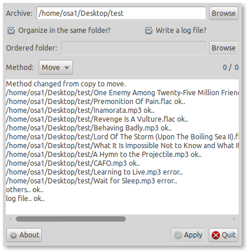

December 4, 2010 - Tagged as: python, nautilus, tr.
Sıkıcı bir cumartesi sabahı arayüzü bitirdim artık. İngilizceye tercüme kısmı tam olarak bitmedi sanırım, tam olarak ingilizceye tercüme edip(programın ne iş yaptığı, credits kısmı vs.) kendi ppa’mı açmak istiyorum aslında.

Program şurdakinin aynısı. Tek farkı, klasöre sağ tıklayıp nautilus scriptini çalıştırmak yerine basit bir arayüz ile gerekli klasörü ve ayarları seçerek aynı işi yapıyor olmanız. Eğer böyle bir şeye ihtiyacınız yoksa(benim yok mesela), bunu indirmeniz için hiçbir sebep olmayabilir. Diğer scriptle aynı işi yapıyor çünkü, hiçbir fark yok. Hatta bence diğeri daha kullanışlı.
Bunu yapmamın sebebi, arayüz programlamaya giriş yapmaktı. Qt ve Gtk kütüphanelerini inceledim ve Gtk ile yaptım. Onun dışında, artık nautilus’a ihtiyaç duymadığından, kde ortamında da çalıştırılabilir(sanırım, gtk kurulu olduğu sürece). Hatta biraz zorlanırsa pencereler ortamında bile çalışabilir, ama Gtk kütüphanesini nasıl kuracağınız hakkında hiçbir fikrim yok.
Tercüme için desteğinizi bekliyorum bu arada :) .
Buradan indirebilirsiniz. Çalıştırmak için tek yapmanız gereken gui.py dosyasına çift tıklamak. ID3 etiketlerini okumak için kullandığım mutagen kütüphanesini de içine attım.
Başka bir sıkıcı cumartesi veya pazar sabahı da yarım bıraktığım irc botun(blogu biraz daha geliştirerek) loglarını osa1.net’e yollamasını halledeceğim. Ftp upload scriptinin de bakıma ihtiyacı var, upload etmeye çalıştığım dosyanın var olup olmadığını denetleyen, varsa üzerine yazayım mı diye soran hali çok daha kullanışlı olurdu.